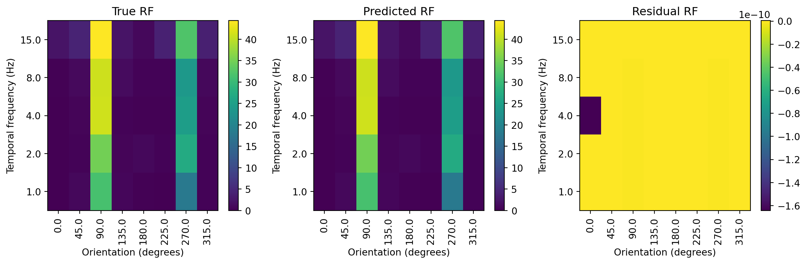

import os
import json
import patsy # for creating design matrices
import numpy as np
import pandas as pd
import statsmodels.api as sm
import matplotlib.pyplot as pltRegression 2
For this lecture we will graft additional features onto our linear model to allow it to handle a wider array of situations. To start, we will consider the case where the dependent variable is binary, requiring the use of logistic regression. We will then show how logistic regression is just a special case of a more general class of models called generalized linear models. With these we can model a variety of different types of dependent variables, including count data and ordinal data. Lastly, we will explore how to evaluate the performance of these models and control for overfitting by splitting our data into training and testing sets and incorporating regularization.
Logistic regression: modeling probability of binary outcomes
A binary classifier takes a set of measurements, \boldsymbol{X}, as inputs and returns the probability that they were generated by a specific event, \hat{\boldsymbol{y}}. To get from \boldsymbol{x} to \hat{\boldsymbol{y}}, we need a function that describes the probability of the class occurring over a range of measurement values.
A quick probability primer
Probabiltilies describe how likely events are to occur. They range from 0, for events that never happen, to 1, for events that are guaranteed to happen. When quantifying probabilities we do this for a class of events, with the total probability across all events adding up to 1 (which means that at any time one of them has to occur). For instance, in the case of flipping a coin, there is a 0.5 (1/2 or 50%) chance that the coin will come up Heads, and 0.5 that it will be Tails. These are the only possibilities (this is a Platonic coin, so it has no thickness and thus cannot land on its side). A coin flip is a good example of an unconditional probability, which is the same regardless of the circumstances. For this, we would write:
\begin{align} p(H)&=0.5 \\ p(T)&=0.5 \\ \end{align}
which says that the probability of the coin coming up heads, p(H), is 0.5, and the probability of coming up tails, p(T), is 0.5.
But probabilities can also depend on the situation, such as the probability that you will buy lunch at a certain time. It is more likely that you will purchase lunch at 11:30 AM than at 10:00 AM. This is a conditional probability. Conditional probabilities are expressed as P(Lunch|Time), which translates as the probability of going for Lunch, (Lunch), is conditional, |, on the time, Time. For a conditional probability we need to know the time to give the probability that we are going to lunch.
The logistic function
One equation that is a useful way to express a conditional probability is the logistic function (also known as the sigmoid function). It has the form:
\sigma(x) = \frac{1}{1+e^{-x}}
Let’s code it up and visualize it:
# create a logistic function
def logistic(x):
return 1 / (1 + np.exp(-x))
# plot the logistic function
x = np.linspace(-10, 10, 100)
plt.plot(x, logistic(x))
plt.title('Logistic Function')
plt.yticks(np.arange(0, 1.1, 0.25))
plt.xlabel('x')
plt.ylabel('y')
plt.grid()
plt.show()This function has a couple of features that make it useful for modeling probabilities. First, it is bounded between 0 and 1, meaning that it will not go beyond the range of values taken by a measure of probability. Second, it’s value can be directly interpreted as a probability. For instance, if \sigma(x)=0.5, then the probability of the event occurring is 0.5. If it returns a value greater than 0.5, we can say that the event is more likely to occur than not. If it returns a value less than 0.5, we can say that the event is less likely to occur than not. When we use the logistic function to predict whether an event will occur, 0.5 will be our cutoff. This is often referred to as the decision boundary.
We can insert our linear model into the logistic function to get the probability of an event occurring. Recall that: \begin{align} \boldsymbol{y}_i &= \boldsymbol{\beta}_0 + \boldsymbol{\beta}_1\boldsymbol{x}_{1,i} + \boldsymbol{\beta}_2\boldsymbol{x}_{2,i} + \boldsymbol{\beta}_3\boldsymbol{x}_{3,i} + ... + \boldsymbol{\beta}_p\boldsymbol{x}_{p,i} \notag \\ \boldsymbol{y}_i &= \boldsymbol{\beta}_0 + \sum_{j=1}^{p}\boldsymbol{\beta}_j\boldsymbol{x}_{j,i} \notag \\ \boldsymbol{y} &= \boldsymbol{X}\boldsymbol{\beta} \notag \\ \end{align}
We can pass this into the logistic function to get the probability the event occurring. This is the logistic regression model.
\begin{align} \hat{y}_i &= \frac{1}{1+e^{-(\boldsymbol{\beta}_0 + \sum_{j=1}^{p}\boldsymbol{\beta}_j\boldsymbol{x}_{j,i})}} \notag \\ \hat{\boldsymbol{y}} &= \frac{1}{1+e^{-\boldsymbol{\beta} \boldsymbol{x}}} \notag \\ \end{align}
where \boldsymbol{\beta} is a vector of \beta coefficients and \boldsymbol{x} is a vector of dependent variables.
Given that we have modified the input to the logistic function to now be a linear equation, we can try to understand how the decision boundary is affected by the \boldsymbol{\beta} vector. To start, we will consider the simple case where we just have an intercept, \boldsymbol{\beta}_0, and one independent variable, \boldsymbol{\beta}_1. Since the decision boundary happens at \sigma(x)=0.5, we can solve for x when \sigma(x)=0.5.
\begin{align} \notag 0.5&=\frac{1}{1+e^{-x}} \\ \notag 0.5&=\frac{1}{1+e^{-0}} \\ \notag 0.5&=\frac{1}{1+1} \\ \notag 0.5&=\frac{1}{2} \end{align}
Since the decision boundary will occur when \boldsymbol{\beta}_0 + \boldsymbol{\beta}_1x=0, we can use some simple algebra to solve for the corresponding value of x. \begin{align} \notag 0&=-(\boldsymbol{\beta}_0+\boldsymbol{\beta}_1x) \\ \notag 0&=-\boldsymbol{\beta}_0-\boldsymbol{\beta}_1x \\ \notag \boldsymbol{\beta}_0&=-\boldsymbol{\beta}_1x \\ \notag -\frac{\boldsymbol{\beta}_0}{\boldsymbol{\beta}_1}&=x \end{align}
This means that the decision boundary depends on both the intercept and the slope. As you increase the intercept, you move the decision boundary to lower values. Increasing the slope, however, will shift the boundary towards 0. Let’s visualize these relationships.
def logistic_linear(x, beta):
return logistic(np.dot(x, beta))
x = np.hstack([np.ones((100,1)), np.linspace(-10, 10, 100).reshape(-1,1)])
var_ints = [-5,-2.5,0,2.5,5]
var_slopes = [0.125,0.25,0.5,1,2]
fig, axs = plt.subplots(2,1)
for ind, var_int in enumerate(var_ints):
y = logistic_linear(x, [var_int, 1])
axs[0].plot(x[:,1], y, label=f'intercept={var_int}', color=[0,0,ind/len(var_ints)])
axs[0].vlines(-var_int, 0, 1, color=[0,0,ind/len(var_ints)], linestyle=':')
axs[0].legend()
axs[0].grid()
axs[0].set_title('Varying Intercept')
axs[0].set_ylabel('$\sigma(x)$')
for ind, var_slope in enumerate(var_slopes):
y = logistic_linear(x, [0, var_slope])
axs[1].plot(x[:,1], y, label=f'slope={var_slope}', color=[ind/len(var_slopes),0,0])
axs[1].legend()
axs[1].grid()
axs[1].set_title('Varying Slope')
axs[1].set_xlabel('x')
fig.tight_layout()One thing in common for the logistic curves plotted above is that as we increase x the probability also increases. To make the probability decrease as x increases, we set our slope to be negative. If we do this without also changing the sign of our intercept, then the decision boundary will change too (see the equation above). In addition, as we increase the magnitude of the slope, the decision boundary will move closer to 0.
fig, axs = plt.subplots(2,1)
for ind, var_int in enumerate(var_ints):
y = logistic_linear(x, [var_int, -1])
axs[0].plot(x[:,1], y, label=f'intercept={var_int}', color=[0,0,ind/len(var_ints)])
axs[0].vlines(-var_int, 0, 1, color=[0,0,ind/len(var_ints)], linestyle=':')
axs[0].legend()
axs[0].grid()
axs[0].set_title('Varying Intercept with negative slope')
axs[0].set_ylabel('$\sigma(x)$')
for ind, var_int in enumerate(var_ints):
y = logistic_linear(x, [var_int, 2.5])
axs[1].plot(x[:,1], y, label=f'intercept={var_int}', color=[ind/len(var_ints),0,0])
axs[1].vlines(-var_int/2.5, 0, 1, color=[ind/len(var_ints),0,0], linestyle=':')
axs[1].legend()
axs[1].grid()
axs[1].set_title('Varying Intercept with larger slope')
axs[1].set_ylabel('$\sigma(x)$')
fig.tight_layout()In general, we can say that the direction of increasing probability is determined by the slope, \boldsymbol{\beta}_1, and the location of the decision boundary is determined by the intercept (\boldsymbol{\beta}_0) scaled by the slope. In general, this holds true for multiple dimensions as well. The decision boundary is a hyperplane that is perpendicular to the weight vector, \boldsymbol{\beta_{1:p}}. The offset of the decision boundary from the origin is determined by the intercept and the slope of the weight vector. This is fairly easy to see in two dimensions, when you have two independent variables.
x_1, x_2 = np.meshgrid(np.linspace(-10, 10, 100), np.linspace(-10, 10, 100))
x_1 = x_1.flatten()
x_2 = x_2.flatten()
betas = np.array([[0, 1, 0], [0, 1, 1], [-4, 1, 1]])
fig, axs = plt.subplots(1,3, figsize=(8,4))
y = logistic_linear(np.hstack([np.ones((10000,1)), np.vstack([x_1, x_2]).T]), betas[0])
axs[0].imshow(y.reshape(100,100), origin='lower', extent=(-10, 10, -10, 10), cmap='Blues')
axs[0].plot([0, 0],[10, -10], color='r', linestyle='--')
axs[0].set_title('Beta = {}'.format(betas[0]))
axs[0].set_ylabel('$x_2$')
axs[0].grid()
y = logistic_linear(np.hstack([np.ones((10000,1)), np.vstack([x_1, x_2]).T]), betas[1])
axs[1].imshow(y.reshape(100,100), origin='lower', extent=(-10, 10, -10, 10), cmap='Blues')
axs[1].plot([-10, 10],[10, -10], color='r', linestyle='--')
axs[1].set_title('Beta = {}'.format(betas[1]))
axs[1].set_xlabel('$x_1$')
axs[1].grid()
y = logistic_linear(np.hstack([np.ones((10000,1)), np.vstack([x_1, x_2]).T]), betas[2])
axs[2].imshow(y.reshape(100,100), origin='lower', extent=(-10, 10, -10, 10), cmap='Blues')
axs[2].plot([-6, 10],[10, -6], color='r', linestyle='--')
axs[2].set_title('Beta = {}'.format(betas[2]))
axs[2].grid()
fig.tight_layout()Here the decision boundary is denoted by the red dashed line, the probability is the color scale. White is 0 and dark blue is 1. If we set the intercept to 0 and \boldsymbol{\beta}_1 to 1, then we have the 2D version of the default logistic function. The decision boundary is a vertical line at x_1=0. When both \boldsymbol{\beta}_1 and \boldsymbol{\beta}_2 are 1, the decision boundary is a diagonal line. The direction of the decision boundary is determined by the weights. If we then set the intercept, \boldsymbol{\beta}_0, to a non-zero value (here -4), we shift that decision boundary away from the origin.
Logistic regression for binary classification
Let’s now try to fit a logistic function to some real data. For this example I have compiled a small dataset where the strength of an evoked response potential (ERP) was measured. On some trials, an auditory stimulus was given, driving a strong ERP, while on others no auditory stimulus was presented, resulting in no ERP. The goal is to predict whether an auditory stimulus was given based on the strength of the ERP. We will use logistic regression to do this. First we will load in the data.
# load the data
data_dir = './data/'
logreg_data = json.load(open(os.path.join(data_dir, 'logregdata.json'), 'r'))
# convert the data to numpy arrays
X = np.array(logreg_data['X'])
y = np.array(logreg_data['y'])
# display to make sure it looks right
print('X = {}'.format(X))
print('y = {}'.format(y))X = [ 47.8682191 79.21943476 59.77661572 67.42808345 106.59886022
45.76555801 103.45205398 56.59460022 60.77195205 111.57862896
32.41245229 118.75920507 41.79053316 81.33619878 54.6388707
45.60598449 51.5419817 39.32098506 45.9932129 52.26591628
27.40391158 26.07979312 46.61066192 25.94308383 64.4758095
-1.39409509 -17.08503545 49.70176208 -11.90910869 34.66836456
8.93607429 17.14723219 -29.02676859 3.89797864 -17.66074236
3.3038969 26.80126476 31.49036756 10.76049118 9.53549015
4.30966256 13.1381603 -25.56534353 2.20072814 41.21241201
-7.3085461 26.00222903 32.07631057 -2.19790223 -19.46658645
1.24571761 -20.11255289 0.51001914 -53.37683445]
y = [1. 1. 1. 1. 1. 1. 1. 1. 1. 1. 1. 1. 1. 1. 1. 1. 1. 1. 1. 1. 1. 1. 1. 1.
1. 0. 0. 0. 0. 0. 0. 0. 0. 0. 0. 0. 0. 0. 0. 0. 0. 0. 0. 0. 0. 0. 0. 0.
0. 0. 0. 0. 0. 0.]We have two numpy arrays values. X is the ERP strength measured on each trial, while y is a binary variable indicating whether an auditory stimulus was given. To fit a logistic regression model to this data, we will use the Logit class from the statsmodels package. This function behaves similar to the OLS function used in the last lecture. We will use the fit method to fit the model to the data. The summary method will give us a summary of the model fit.
It is a good idea to visualize the data before fitting a model to it. This should give you a sense of how well the model will fit the data and whether there are outliers.
fig, ax = plt.subplots()
ax.scatter(X, y, c=y, cmap='bwr')
ax.set_xlabel('ERP strength')
ax.set_ylabel('Auditory stimulus present')
ax.set_title('ERP strength vs. auditory stimulus present')
ax.grid()This graph separates out the data points corresponding to trials when a auditory stimulus was present (in red) or absent (in blue). Here we can see that on average the ERP strength values are higher when a auditory stimulus is present. Trials where the auditory stimulus were given have a y value of 1, while those without the stimulus are 0.
Now we will use the Logit class to fit a logistic regression model to the data.
# create a pandas dataframe of the data
df = pd.DataFrame({'ERP': X.flatten(), 'stim': y.flatten()})
# create a logistic regression model
mdl= sm.Logit(df['stim'], sm.add_constant(df['ERP']))
# fit the model
res = mdl.fit()
# print the summary statistics
print(res.summary())Optimization terminated successfully.
Current function value: 0.241408
Iterations 8
Logit Regression Results
==============================================================================
Dep. Variable: stim No. Observations: 54
Model: Logit Df Residuals: 52
Method: MLE Df Model: 1
Date: Mon, 13 Jan 2025 Pseudo R-squ.: 0.6503
Time: 12:28:02 Log-Likelihood: -13.036
converged: True LL-Null: -37.282
Covariance Type: nonrobust LLR p-value: 3.318e-12
==============================================================================
coef std err z P>|z| [0.025 0.975]
------------------------------------------------------------------------------
const -4.3803 1.432 -3.060 0.002 -7.186 -1.575
ERP 0.1332 0.040 3.365 0.001 0.056 0.211
==============================================================================The fitting was successful. It appears that the ERP strength is a significant predictor of whether an auditory stimulus was given. We can see this from the ‘P>|z|’ column in the summary table. There, the p-value for the ERP term is 0.001. We can also find the decision boundary based on the coefficients that the model has learned. ‘Const’ is the value of the intercept, and ‘ERP’ is the slope. The decision boundary is given by -\frac{Const}{ERP}=\frac{-4.38}{0.13}=33.69.
The logistic model \boldsymbol{\beta} values can be pulled out of the results object. These are found in the params attribute. The first element in the params array is the intercept (\boldsymbol{\beta}_0), while each successive element is the beta for the corresponding factor in the model. Passing these to our logistic function, we can generate the curve that the model has learned, and precisely calculate the decision boundary.
fig, ax = plt.subplots()
ax.scatter(X, y, c=y, cmap='bwr')
ax.plot(np.sort(X), logistic(res.params[0] + res.params[1] * np.sort(X)), color='k')
ax.vlines(-res.params[0]/res.params[1], 0, 1, color='k', linestyle=':')
ax.set_xlabel('ERP strength')
ax.set_ylabel('Auditory stimulus present')
ax.set_title('ERP strength vs. auditory stimulus presence')
ax.grid()/var/folders/xr/cvz2q4cs7mn5n78kvjyvkb_00000gn/T/ipykernel_10598/1259642582.py:3: FutureWarning: Series.__getitem__ treating keys as positions is deprecated. In a future version, integer keys will always be treated as labels (consistent with DataFrame behavior). To access a value by position, use `ser.iloc[pos]`
ax.plot(np.sort(X), logistic(res.params[0] + res.params[1] * np.sort(X)), color='k')
/var/folders/xr/cvz2q4cs7mn5n78kvjyvkb_00000gn/T/ipykernel_10598/1259642582.py:4: FutureWarning: Series.__getitem__ treating keys as positions is deprecated. In a future version, integer keys will always be treated as labels (consistent with DataFrame behavior). To access a value by position, use `ser.iloc[pos]`
ax.vlines(-res.params[0]/res.params[1], 0, 1, color='k', linestyle=':')You might be wondering why go through all this trouble of creating an entirely new model. Perhaps we could just fit our linear model to this dataset? Let’s try this and see how that turns out.
# create linear regression model
lin_mdl = sm.OLS(df['stim'], sm.add_constant(df['ERP']))
# fit the model
lin_res = lin_mdl.fit()
# print the summary statistics
print(lin_res.summary()) OLS Regression Results
==============================================================================
Dep. Variable: stim R-squared: 0.566
Model: OLS Adj. R-squared: 0.557
Method: Least Squares F-statistic: 67.77
Date: Mon, 13 Jan 2025 Prob (F-statistic): 5.48e-11
Time: 12:28:02 Log-Likelihood: -16.518
No. Observations: 54 AIC: 37.04
Df Residuals: 52 BIC: 41.01
Df Model: 1
Covariance Type: nonrobust
==============================================================================
coef std err t P>|t| [0.025 0.975]
------------------------------------------------------------------------------
const 0.1620 0.058 2.772 0.008 0.045 0.279
ERP 0.0101 0.001 8.232 0.000 0.008 0.013
==============================================================================
Omnibus: 7.087 Durbin-Watson: 1.244
Prob(Omnibus): 0.029 Jarque-Bera (JB): 2.452
Skew: 0.010 Prob(JB): 0.293
Kurtosis: 1.956 Cond. No. 60.9
==============================================================================
Notes:
[1] Standard Errors assume that the covariance matrix of the errors is correctly specified.Ok, so at first glance things don’t look too bad. The statistically significant factors are the same as with the logistic regression model. However, let’s plot the residuals to see if there is a pattern in the errors.
y_pred = lin_res.predict(sm.add_constant(df['ERP']))
y_resid = df['stim'] - y_pred
fig, ax = plt.subplots()
ax.scatter(X, y_resid)
ax.axhline(0, color='r', linestyle='--')
ax.set_xlabel('ERP strength')
ax.set_ylabel('Residual')
ax.set_title('Residuals vs. ERP strength')
ax.grid()Eek! This is not good. The residuals are systematically varying with the ERP strength. This arises because the dependent variable can only take on two values, 0 or 1, while the linear model is predicting continuous values ranging from negative to positive infinity. As you keep increasing the ERP strength, you will eventually get values exceeding 1 (or below 0 if you decrease ERP strength), which would not make sense as a value that reflects the probability of an event.
Generalized linear models
The logistic regression model is a special case of a more general class of models called generalized linear models (GLMs). In the logistic model we took our linear model and passed it through a logistic function to get the probability of an event occurring (an auditory stimulus). This was to ensure that the output was bounded between 0 and 1, just as a probability value should be. GLMs are a generalization of this idea. Instead of just using the logistic function, we can use other functions that capture properties of the dependent variable.
So far we have covered two of them. For the linear model, this is just the identity function, f(x)=x. The identity function is used when the dependent variable is continuous and unbounded. For the logistic model, we used, f(x)=\frac{1}{1+e^{-x}}.
In general, a GLM has three components:
1. A linear model, \boldsymbol{y}=\boldsymbol{X}\boldsymbol{\beta}.
2. A link function, g(\mu), that transforms the conditional mean, \mu, of the dependent variable (i.e. its mean value given the dependent variables) to a range suitable for the linear model.
3. Inverse of the link function, f(\boldsymbol{y}), that maps the linear model to the dependent variable. This is what we have used so far for the logistic equation. It is helpful for predicting the dependent variable given the independent variables.
There are many other mean functions beyond the identity and logistic functions. Below is a table of some and there properties:
| Distribution | Link function | Inverse of the link function | Properties | Neuroscientific applications |
|---|---|---|---|---|
| Normal | g(\mu)=\mu | f(y) = y | Continuous, Unbounded | Relating BOLD signal to task variables |
| Poisson | g(\mu)=\log(\mu) | f(y) = e^y | Count data, positive | Spike counts |
| Binomial | g(\mu)=\log(\frac{\mu}{1-\mu}) | f(y) = \frac{1}{1+e^{-y}} | Binary data | Go/No-go decisions |
| Gamma | g(\mu)=-\frac{1}{\mu} | f(y) = -\frac{1}{y} | Continuous, positive | Reaction times |
In neuroscience one frequently encounters data that is best described by the Poisson distribution. This distribution is appropriate for count data, which starts at 0 and can go up to positive infinity. To map the output of a linear model onto that distribution (i.e. the inverse link function), one uses the the exponential function. This can be expressed as \boldsymbol{y}_i=e^{\boldsymbol{\beta}\boldsymbol{X}_i}. The behavior of the exponential function, e^x, is such that it is always positive and increases as x increases.
Let’s examine how this function behaves.
# inverse link function for poisson GLM
def exp_linear(x, beta):
return np.exp(np.dot(x, beta))
# Parameters for example exponential functions
x = np.hstack([np.ones((100,1)), np.linspace(-2, 2, 100).reshape(-1,1)])
var_ints = [-1,-0.5,0,0.5,1]
var_slopes = [0.1,0.2,0.3,0.4,0.5]
# plot the exponential functions
fig, axs = plt.subplots(2,1)
for ind, var_int in enumerate(var_ints):
y = exp_linear(x, [var_int, 1])
axs[0].plot(x[:,1], y, label=f'intercept={var_int}', color=[0,0,ind/len(var_ints)])
axs[0].axhline(1, color='r', linestyle='--')
axs[0].legend()
axs[0].grid()
axs[0].set_title('Varying Intercept')
axs[0].set_ylabel('$e^x$')
for ind, var_slope in enumerate(var_slopes):
y = exp_linear(x, [0, var_slope])
axs[1].plot(x[:,1], y, label=f'slope={var_slope}', color=[ind/len(var_slopes),0,0])
axs[1].legend()
axs[1].grid()
axs[1].set_title('Varying Slope')
axs[1].set_xlabel('x')
fig.tight_layout()This is frequently used with spike count data, where the number of spikes is modeled as a Poisson distribution. The Poisson distribution is a discrete distribution that models the number of events that occur in a fixed interval of time or space. It is defined by a single parameter, \lambda, which is the average number of events in the interval (note, since it is an average that means \lambda can be a decimal number, it does not have to be an integer like the counts in the Poisson distribution). With a GLM, we can model the expected number of spikes as a function of multiple independent variables. Here \lambda=e^{\boldsymbol{X}\boldsymbol{\beta}}.
Similar to the logistic function, the exponential function will be shifted by the intercept and scaled by the slope. There is no decision boundary in this case, but the slope will determine the rate at which the expected number of spikes increases as the independent variable increases. The intercept will determine the expected number of spikes when the independent variable is 0.
Example with visual coding
We can use a Poisson GLM to model the number of spikes a neuron produces in response to visual stimuli. Our dependent variables will be the properties of the visual stimuli, while the independent variable will be the number of spikes.
Since 1959 it has been known that neurons in the primary visual cortex respond to moving lines in the visual field. It was a chance observation by Hubel and Wiesel, that lead them to identify the space of stimuli that optimally drive neuronal responses in primary visual cortex. They found that when a bar of light moved across a specific area of the visual field, it would elicit single neuron spiking when it occurred at a particular angle. The further it rotated away from that angle, less of a response was elicited.

While bars of a light can be easily generated and their properties modified, modern visual physiologists use drifting gratings, which can be loosely thought of as a series of white bars moving across a black background. To see what they look like, check out this link.
Drifting gratings are generally characterized by three parameters:
- Orientation: This is the direction the bars are moving, and varies from 0-360 degrees. Orientation sensitivity is one of the most well studied features of neural coding for drifting gratings. In general, neurons respond preferentially to two orientations that are opposing, meaning they are 180 degrees apart, with the response fading out when you get more than 30 degrees away from the preferred orientation.
- Spatial frequency: The width of the bars. The thicker the bars are, the lower the spatial frequency. The narrower the bars are, the higher the spatial frequency. Neurons tend to have a preferred spatial frequency.
- Temporal frequency: How fast are the bars moving across the visual field. A higher frequency means the bars are drifting faster. Neurons tend to have a preferred temporal frequency.
- Contrast: The degree to which the black and white lines of the grating deviate from gray. Neurons in V1 typically respond with increasing vigor as the contrast is raised from an all gray screen to solid black and white bars.
We will examine the responses of neurons in mouse primary visual cortex to these stimuli. The Allen Institute has a publicly available dataset of of such data. The data we will work with was collected while mice viewed a wide variety of stimuli, including many drifting gratings. According to their white paper, the drifting gratings all had the same contrast (80%) and spatial frequency (0.04 cycles/degree), but varied in their orientation (0-315 in 45 degree increments), and temporal frequency (1, 2, 4, 8, and 15 Hz).
I have compiled a small dataset of the spiking responses of neurons to these stimuli from a single mouse.
# load v1 response data
v1_resp = pd.read_csv('./data/v1_dg_resp.csv')
v1_resp.head()| stimulus_presentation_id | start_time | stop_time | orientation | temporal_frequency | 0 | 1 | 2 | 3 | 4 | ... | 52 | 53 | 54 | 55 | 56 | 57 | 58 | 59 | 60 | 61 | |
|---|---|---|---|---|---|---|---|---|---|---|---|---|---|---|---|---|---|---|---|---|---|
| 0 | 3815 | 1636.690362 | 1638.692042 | 0.0 | 1.0 | 0 | 0 | 1 | 18 | 21 | ... | 81 | 0 | 11 | 12 | 2 | 3 | 2 | 28 | 27 | 1 |
| 1 | 3866 | 1789.818328 | 1791.819968 | 0.0 | 1.0 | 0 | 0 | 0 | 10 | 11 | ... | 19 | 0 | 0 | 3 | 0 | 0 | 3 | 9 | 11 | 1 |
| 2 | 3884 | 1843.863438 | 1845.865118 | 0.0 | 1.0 | 0 | 2 | 1 | 11 | 13 | ... | 51 | 0 | 14 | 8 | 1 | 1 | 9 | 42 | 19 | 1 |
| 3 | 3893 | 1870.886012 | 1872.887682 | 0.0 | 1.0 | 0 | 5 | 0 | 9 | 11 | ... | 37 | 0 | 6 | 3 | 0 | 0 | 6 | 21 | 10 | 0 |
| 4 | 3924 | 1963.963798 | 1965.965448 | 0.0 | 1.0 | 0 | 0 | 2 | 7 | 16 | ... | 72 | 3 | 12 | 9 | 0 | 2 | 14 | 56 | 32 | 3 |
5 rows × 67 columns
The data has been imported as a pandas dataframe. Each row corresponds to the presentation of a drifting grating stimulus. The fields ‘orientation’ and ‘temporal_frequency’ describe properties of the drifting grating that was presented. Columns that are numbered correspond to different neurons that were recorded from. Each entry in a column contains the number of spikes that neuron fired during the 2 seconds that a stimulus was presented. You can see from the first 5 entries in the table that the same stimulus was presented multiple times. This allows us to get a sense of the variability in the neuron’s response to the same stimulus. If we want to quickly inspect the mean response of each neuron to the different stimuli, we can use the Dataframe’s pivot_table method to calculate the mean response of each neuron to each type of stimulus.
nrn_ids = [str(x) for x in range(62)] # neuron ids, 0-61
v1_rfs = v1_resp.pivot_table(index=['orientation', 'temporal_frequency'], values=nrn_ids, aggfunc='mean')# plot the receptive field of neuron 11
example_rf = v1_rfs['16'].values.reshape(8,5)
ori = np.unique(v1_rfs.index.get_level_values('orientation'))
tf = np.unique(v1_rfs.index.get_level_values('temporal_frequency'))
# 2D rf plotting function, we will use this a lot in subsequent analyses
def rf_plot(rf, title='Receptive Field', ax=None):
if ax is None:
fig, ax = plt.subplots()
imh = ax.imshow(rf.T, origin='lower', aspect='auto')
ax.set_xlabel('Orientation (degrees)')
ax.set_ylabel('Temporal frequency (Hz)')
ax.set_xticks(np.arange(0,8))
ax.set_xticklabels(ori)
for tick in ax.get_xticklabels():
tick.set_rotation(90)
ax.set_yticks(np.arange(0,5))
ax.set_yticklabels(tf)
ax.set_title(title)
plt.colorbar(imh, ax=ax)
fig, axs = plt.subplots(1,3, figsize=(8,4))
axs[0].plot(ori, np.mean(example_rf, axis=1))
axs[0].set_title('Orientation tuning')
axs[0].set_xlabel('Orientation (degrees)')
axs[0].set_ylabel('Spike count (2 sec window)')
axs[0].grid()
axs[1].plot(tf, np.mean(example_rf,axis=0))
axs[1].set_title('Temporal frequency tuning')
axs[1].set_xlabel('Temporal frequency (Hz)')
axs[1].grid()
rf_plot(example_rf, ax=axs[2])
fig.tight_layout()We have plotted the response of the neuron in three different ways. The first captures the orientation tuning by plotting the mean response of the neuron to each orientation irrespective of the temporal frequency. The second plot does the same but for temporal frequency. Lastly, the third plot illustrates the response as a two dimensional image with color being the spike count, orientation along the x-axis, and temporal frequency along the y-axis. For this example neuron we can see that it responds vigorously to stimuli with an orientation of 90 degrees, and that response increases with the temporal frequency of the drifting grating.
The neurons in this dataset exhibit a wide variety of responses.
# plot a grid of the receptive fields from all neurons
fig, axs = plt.subplots(8,8)
axs = axs.flatten()
for ind,id in enumerate(nrn_ids):
curr_rf = v1_rfs[id].values.reshape(8,5).T
axs[ind].imshow(curr_rf, origin='lower')
axs[ind].set_xticks([])
axs[ind].set_yticks([])
axs[62].axis('off')
axs[63].axis('off')
fig.suptitle('Receptive fields of V1 neurons')
fig.tight_layout()Imagine we want to model the response of a single neuron to these stimuli. We can use a Poisson GLM to do this. We will use the GLM class from the statsmodels package to fit the model. Since the response of a neuron depends on both the orientation and temporal frequency of the drifting grating, along with their interaction, we will have to include all these terms in the model.
There is one extra complication here, though. Unlike the linear model we fit using the OLS class, we cannot just pass the dataframe and formula to the GLM function. Instead, we have to use another package to construct the design matrix X and the response vector y. We will use the patsy package to do this. The dmatrices function from the patsy package takes a formula and dataframe, then returns the design matrix and response vector. We can then pass these to the GLM function to fit the model.
Formula specification
patsy allows you to specify formulae that can be translated into design matrices. There are many operators and features supported by them, but we will focus on just a few. For a detailed treatment of this, see here. Here y is the dependent variable and x1 and x2 are independent variables.
| Operator | Description | Example |
|---|---|---|
~ |
Separates the dependent variable from the independent variables. | y ~ x1 + x2 |
+ |
Adds a term to the model. | y ~ x1 + x2 |
* |
Includes the interaction between variables and their main effects. | y ~ x1 * x2 |
: |
Includes only the interaction between variables, without main effects. | y ~ x1 : x2 |
** |
Includes polynomial terms up to the specified degree. | y ~ x1 + x2**2 |
C() |
Indicates that a variable should be treated as a categorical variable. | y ~ C(x1) |
Another formatting detail is that the values in the ‘orientation’ and ‘temporal_frequency’ columns are stored as numeric data types. This means that if we construct a model it will treat these as continuous variables. This would result in the model trying to fit a single slope to the firing rate as a function of either orientation or temporal frequency. However, looking at our neurons, we can see that they respond to orientation and temporal frequency in a non-linear manner. Instead, we should treat these as categorical variables, with a separate \beta coefficients for each orientation and temporal frequency. We also want our dependent variable to have a meaningful name, instead of just the unit ID number. We will wrap together the renaming and design matrix creation into a single function.
# create a simple function for defining our design matrices
def format_tables(df, unit_id, fm='spike_count ~ 1'): # default formula is just the spike count with an intercept
df = df.copy()
y, X = patsy.dmatrices(fm, df.rename(columns={unit_id: 'spike_count'}))
return y, XTo start using GLMs, let’s create a simple model that just tries to model the response of the neuron as a function of the orientation and temporal frequencies of the drifting gratings, but doesn’t consider their interaction. For those of you that have taken a statistics class, this is just a main effects model.
# calculate the design matrix
y, X = format_tables(v1_resp, '16', fm='spike_count ~ C(orientation) + C(temporal_frequency)')
# initialize poisson GLM model
exp_mdl = sm.GLM(y, X, family=sm.families.Poisson())
# fit the model
res = exp_mdl.fit()
# print the summary statistics
print(res.summary()) Generalized Linear Model Regression Results
==============================================================================
Dep. Variable: spike_count No. Observations: 600
Model: GLM Df Residuals: 588
Model Family: Poisson Df Model: 11
Link Function: Log Scale: 1.0000
Method: IRLS Log-Likelihood: -1648.5
Date: Mon, 13 Jan 2025 Deviance: 2126.0
Time: 12:28:03 Pearson chi2: 2.56e+03
No. Iterations: 7 Pseudo R-squ. (CS): 1.000
Covariance Type: nonrobust
=================================================================================================
coef std err z P>|z| [0.025 0.975]
-------------------------------------------------------------------------------------------------
Intercept -0.8758 0.158 -5.549 0.000 -1.185 -0.566
C(orientation)[T.45.0] 0.9719 0.181 5.365 0.000 0.617 1.327
C(orientation)[T.90.0] 4.2313 0.155 27.225 0.000 3.927 4.536
C(orientation)[T.135.0] 0.6690 0.190 3.526 0.000 0.297 1.041
C(orientation)[T.180.0] 0.0465 0.216 0.216 0.829 -0.376 0.469
C(orientation)[T.225.0] 0.6318 0.191 3.308 0.001 0.257 1.006
C(orientation)[T.270.0] 3.8008 0.156 24.361 0.000 3.495 4.107
C(orientation)[T.315.0] 0.8267 0.185 4.468 0.000 0.464 1.189
C(temporal_frequency)[T.2.0] 0.2260 0.048 4.698 0.000 0.132 0.320
C(temporal_frequency)[T.4.0] 0.2731 0.048 5.736 0.000 0.180 0.366
C(temporal_frequency)[T.8.0] 0.2886 0.047 6.083 0.000 0.196 0.382
C(temporal_frequency)[T.15.0] 0.5987 0.045 13.408 0.000 0.511 0.686
=================================================================================================Examining the summary table, we can see that the model detected a significant relationship between the response of the neuron and the orientation and temporal frequency of drifting gratings. In particular, notice that the \beta coefficients for 90 and 270 degrees are the largest, which matches what we saw in the orientation tuning plot above. Note also that the temporal frequency \beta coefficients increase, which matches what we saw in the temporal frequency tuning plot. To evaluate the model fit, we can plot the predicted response of the neuron against the actual response.
# get observed RF
rf_true = v1_rfs['16'].values.reshape(8,5)
# calculate the predicted receptive field
# predicted response
resp_pred = res.predict(X)
# reshape to 8x5x15, the dimensions of the RF and repetitions of each condition
resp_pred = resp_pred.reshape(8,5,15)
# take the first repetition of the predicted RF, all other repetitions are the same
rf_pred = resp_pred[:,:,0]
# calculate the residual
rf_resid = rf_true - rf_pred
fig, axs = plt.subplots(1,3, figsize=(12,4))
rf_plot(rf_true, title='True RF', ax=axs[0])
rf_plot(rf_pred, title='Predicted RF', ax=axs[1])
rf_plot(rf_resid, title='Residual RF', ax=axs[2])
fig.tight_layout() Our model seems to be doing a good job of capturing the response of the neuron to the drifting gratings. The predicted response is closely tracking the actual response. However, there are some substantial deviations evident in the residual. In particular, the model is overestimating the response for drifting gratings at 90 degrees and 15 Hz, and usually underestimating the response at lower temporal frequencies. To account for this, we can add interaction terms to our model, to capture the response of the neuron to each combination of orientation and temporal frequency.
# rerun model with interaction term
y, X = format_tables(v1_resp, '16', fm='spike_count ~ C(orientation) * C(temporal_frequency)')
exp_mdl = sm.GLM(y, X, family=sm.families.Poisson())
res = exp_mdl.fit()
print(res.summary())
# calculate the predicted receptive field
rf_pred_int = res.predict(X).reshape(8,5,15)[:,:,0]
# calculate the residual
rf_resid_int = rf_true - rf_pred_int
fig, axs = plt.subplots(1,3, figsize=(12,4))
rf_plot(rf_true, title='True RF', ax=axs[0])
rf_plot(rf_pred_int, title='Predicted RF', ax=axs[1])
rf_plot(rf_resid_int, title='Residual RF', ax=axs[2])
fig.tight_layout() Generalized Linear Model Regression Results
==============================================================================
Dep. Variable: spike_count No. Observations: 600
Model: GLM Df Residuals: 560
Model Family: Poisson Df Model: 39
Link Function: Log Scale: 1.0000
Method: IRLS Log-Likelihood: -1488.8
Date: Mon, 13 Jan 2025 Deviance: 1806.7
Time: 12:28:04 Pearson chi2: 1.96e+03
No. Iterations: 24 Pseudo R-squ. (CS): 1.000
Covariance Type: nonrobust
=========================================================================================================================
coef std err z P>|z| [0.025 0.975]
-------------------------------------------------------------------------------------------------------------------------
Intercept -2.7081 1.000 -2.708 0.007 -4.668 -0.748
C(orientation)[T.45.0] 2.5649 1.038 2.472 0.013 0.531 4.599
C(orientation)[T.90.0] 6.1549 1.001 6.148 0.000 4.193 8.117
C(orientation)[T.135.0] 2.4849 1.041 2.387 0.017 0.445 4.525
C(orientation)[T.180.0] 1.3863 1.118 1.240 0.215 -0.805 3.578
C(orientation)[T.225.0] -1.272e-13 1.414 -8.99e-14 1.000 -2.772 2.772
C(orientation)[T.270.0] 5.5910 1.002 5.581 0.000 3.627 7.555
C(orientation)[T.315.0] 1.9459 1.069 1.820 0.069 -0.149 4.041
C(temporal_frequency)[T.2.0] 0.6931 1.225 0.566 0.571 -1.707 3.094
C(temporal_frequency)[T.4.0] -19.8212 1.22e+04 -0.002 0.999 -2.4e+04 2.39e+04
C(temporal_frequency)[T.8.0] 1.6094 1.095 1.469 0.142 -0.538 3.756
C(temporal_frequency)[T.15.0] 3.5264 1.015 3.476 0.001 1.538 5.515
C(orientation)[T.45.0]:C(temporal_frequency)[T.2.0] -1.4663 1.320 -1.110 0.267 -4.054 1.122
C(orientation)[T.90.0]:C(temporal_frequency)[T.2.0] -0.5884 1.226 -0.480 0.631 -2.992 1.815
C(orientation)[T.135.0]:C(temporal_frequency)[T.2.0] -1.0986 1.307 -0.841 0.401 -3.660 1.463
C(orientation)[T.180.0]:C(temporal_frequency)[T.2.0] 0.5596 1.350 0.415 0.678 -2.086 3.205
C(orientation)[T.225.0]:C(temporal_frequency)[T.2.0] 1.2528 1.626 0.771 0.441 -1.934 4.439
C(orientation)[T.270.0]:C(temporal_frequency)[T.2.0] -0.2753 1.227 -0.224 0.822 -2.681 2.130
C(orientation)[T.315.0]:C(temporal_frequency)[T.2.0] -0.6931 1.336 -0.519 0.604 -3.312 1.926
C(orientation)[T.45.0]:C(temporal_frequency)[T.4.0] 19.5588 1.22e+04 0.002 0.999 -2.39e+04 2.4e+04
C(orientation)[T.90.0]:C(temporal_frequency)[T.4.0] 20.0912 1.22e+04 0.002 0.999 -2.39e+04 2.4e+04
C(orientation)[T.135.0]:C(temporal_frequency)[T.4.0] 19.2822 1.22e+04 0.002 0.999 -2.39e+04 2.4e+04
C(orientation)[T.180.0]:C(temporal_frequency)[T.4.0] 19.8212 1.22e+04 0.002 0.999 -2.39e+04 2.4e+04
C(orientation)[T.225.0]:C(temporal_frequency)[T.4.0] 21.2075 1.22e+04 0.002 0.999 -2.39e+04 2.4e+04
C(orientation)[T.270.0]:C(temporal_frequency)[T.4.0] 20.1410 1.22e+04 0.002 0.999 -2.39e+04 2.4e+04
C(orientation)[T.315.0]:C(temporal_frequency)[T.4.0] 20.1779 1.22e+04 0.002 0.999 -2.39e+04 2.4e+04
C(orientation)[T.45.0]:C(temporal_frequency)[T.8.0] -1.3412 1.156 -1.160 0.246 -3.606 0.924
C(orientation)[T.90.0]:C(temporal_frequency)[T.8.0] -1.3443 1.097 -1.225 0.220 -3.495 0.806
C(orientation)[T.135.0]:C(temporal_frequency)[T.8.0] -1.1499 1.156 -0.995 0.320 -3.415 1.115
C(orientation)[T.180.0]:C(temporal_frequency)[T.8.0] -1.0498 1.262 -0.832 0.406 -3.523 1.424
C(orientation)[T.225.0]:C(temporal_frequency)[T.8.0] 0.3365 1.531 0.220 0.826 -2.664 3.336
C(orientation)[T.270.0]:C(temporal_frequency)[T.8.0] -1.3311 1.098 -1.212 0.226 -3.484 0.822
C(orientation)[T.315.0]:C(temporal_frequency)[T.8.0] -0.9163 1.189 -0.770 0.441 -3.247 1.415
C(orientation)[T.45.0]:C(temporal_frequency)[T.15.0] -1.9169 1.059 -1.810 0.070 -3.993 0.159
C(orientation)[T.90.0]:C(temporal_frequency)[T.15.0] -3.1814 1.016 -3.130 0.002 -5.174 -1.189
C(orientation)[T.135.0]:C(temporal_frequency)[T.15.0] -2.4277 1.068 -2.273 0.023 -4.521 -0.335
C(orientation)[T.180.0]:C(temporal_frequency)[T.15.0] -2.2046 1.160 -1.900 0.057 -4.479 0.069
C(orientation)[T.225.0]:C(temporal_frequency)[T.15.0] 0.5680 1.430 0.397 0.691 -2.236 3.372
C(orientation)[T.270.0]:C(temporal_frequency)[T.15.0] -2.9415 1.017 -2.891 0.004 -4.936 -0.947
C(orientation)[T.315.0]:C(temporal_frequency)[T.15.0] -1.4118 1.091 -1.294 0.195 -3.549 0.726
=========================================================================================================================
By including the interaction term, the model now perfectly captures the response of the neuron to the drifting gratings. In fact, it is too perfect. The residuals are on the order of 10^-10 (which is essentially zero). This is a sign that we have overfit the model. We can test this by training on the model on just a subset of data and comparing it with an RF estimated from another subset it has not seen. This procedure is generally referred to as cross-validation. The data we train or fit the model to will be called the training set, while the data it has not seen where we evaluate its performance will be called the test set. The residual calculated on the test set will give us a sense of how well the model generalizes to new data.
# separate data into stratified training and test sets
train_inds = np.mod(np.arange(len(v1_resp)), 15)<12
v1_resp_train = v1_resp.iloc[train_inds]
v1_resp_test = v1_resp.iloc[~train_inds]We split the data into two sets. The training set will be 80% of the data, while the test set will be 20%. We use more data for training because the more data the model sees, the better it will be able to learn the underlying relationship between the independent and dependent variables. A 80/20%, also known as a 5-fold cross validation, is a common split ratio.
# train model
y_train, X_train = format_tables(v1_resp_train, '16', fm='spike_count ~ C(orientation) * C(temporal_frequency)')
exp_mdl = sm.GLM(y_train, X_train, family=sm.families.Poisson())
res = exp_mdl.fit()
# test model
y_test, X_test = format_tables(v1_resp_test, '16', fm='spike_count ~ C(orientation) * C(temporal_frequency)')
rf_test_pred = res.predict(X_test).reshape(8,5,3)[:,:,0]
# true RF from test set
v1_rfs_test = v1_resp_test.pivot_table(index=['orientation', 'temporal_frequency'], values=nrn_ids, aggfunc='mean')
rf_test_true = v1_rfs_test['16'].values.reshape(8,5)
# calculate the residual
rf_test_resid = rf_test_true - rf_test_pred
fig, axs = plt.subplots(1,3, figsize=(12,4))
rf_plot(rf_test_true, title='True RF', ax=axs[0])
rf_plot(rf_test_pred, title='Predicted RF', ax=axs[1])
rf_plot(rf_test_resid, title='Residual RF', ax=axs[2])
fig.tight_layout()Comparing the prediction with the held out test data, we can see that the model performs far worse. For instance, for drifting gratings at 90 degrees and 8 Hz our estimate is off by almost 25 spikes! We could examine the error for each stimulus to get a sense of how poorly the model performs, but it would be more convenient to have a measure that summarizes the error across all stimuli. For GLMs, the most common measure of error is the deviance. The deviance reflects how well the model fits the data by comparing the predicted response to the actual response. The lower the deviance, the better the model fits the data. The deviance is calculated as:
D = 2\sum_{i=1}^{n}y_i\log\left(\frac{y_i}{\hat{y}_i}\right) - y_i + \hat{y}_i
Recall from our linear regression lesson, y_i is the actual response of the neuron, while \hat{y}_i is the predicted response. The deviance is calculated for each data point, and then summed across all data points. Looking at the equation, you can get some intuition for how it gives a lower value for a better fitting model. If y_i and \hat{y}_i are the same, then the log term will be 0 and the sum of y_i and \hat{y}_i will also be zero. Adding them together gives zero.
# function for calculating deviance
def deviance(y_true, y_pred):
y_pred[y_pred==0] = 1e-10 # to avoid log(0), which is -inf
y_true[y_true==0] = 1e-10
return 2*np.sum(y_true*np.log(y_true/y_pred) - y_true + y_pred)
# calculate the deviance of the model
dev_main = deviance(rf_true, rf_pred)
dev_int = deviance(rf_true, rf_pred_int)
dev_test = deviance(rf_test_true, rf_test_pred)
print('Deviance of main model: {}'.format(dev_main))
print('Deviance of interaction model: {}'.format(dev_int))
print('Deviance of interaction model with train/test: {}'.format(dev_test))Deviance of main model: 21.281874845218248
Deviance of interaction model: 2.931960808858664e-11
Deviance of interaction model with train/test: 104.20409893816736There is a story in these deviance scores! The deviance of the interaction model with train/test is higher than both the main effects and interaction models trained and tested on all the data. This is because training and testing on the entire dataset allows the model to fit to most of the variability, whether it is due to a systematic relationship or noise. Fitting the interaction model on just the training data and testing it on the test data caused a massive drop in performance (a higher deviance score). This is because the noise it fit to in the training set was not in the test set. Since the interaction terms seem especially noise sensitive, perhaps the model would perform better if we got rid of the interaction terms. To test this, let’s use a main effects model with the train/test data split.
# train model
y_train, X_train = format_tables(v1_resp_train, '16', fm='spike_count ~ C(orientation) + C(temporal_frequency)')
exp_mdl = sm.GLM(y_train, X_train, family=sm.families.Poisson())
res = exp_mdl.fit()
# test model
y_test, X_test = format_tables(v1_resp_test, '16', fm='spike_count ~ C(orientation) + C(temporal_frequency)')
rf_test_main_pred = res.predict(X_test).reshape(8,5,3)[:,:,0]
dev_test_main = deviance(rf_test_true, rf_test_main_pred)
print('Deviance of interaction vs main model on test set: {} vs {}'.format(dev_test, dev_test_main))Deviance of interaction vs main model on test set: 104.20409893816736 vs 123.80230520651624When using the train/test approach, the main effects model performed worse than the interaction model. This suggests that the interaction model is capturing some of the underlying relationships in the data that are missed by only considering orientation and temporal frequency as independently contributing to the response of the neuron. However, we saw that the interaction model has a tendency to overfit, so it may be performing worse than is apparent. Is there a way to get the benefits of including all the interaction terms in the model while controlling for overfitting? Yes, if use regularization as part of the fitting process.
Regularization
The problem has been that we have so many factors accessible to the interaction model that it can now overfit the data. By overfitting, we mean that the model tries to capture all the variability in the training data. A good example of this phenomenon is fitting a curve with as many parameters as there are data points.
Imagine we have two variables, x and y, that are related to each other by the equation y=x+\epsilon. Here \epsilon is some noise that makes x and y only partially correlated. We want to predict the value of y given the value of x. There are a host of models that can be used. One is our old friend the line equation, where y=b+wx.
# create two partially correlated variables
np.random.seed(47)
x = np.random.randn(10)
y = x + np.random.randn(10)/2 # y is partially correlated with x
def plot_w_fit(x, y, mdl_order=1, ax=None):
"""
Function to plot data and fit a linear model.
Parameters
----------
x : array
Array of x values.
y : array
Array of y values.
mdl_order : int
Order of polynomial to fit to data.
ax : matplotlib.axes.Axes
Axis to plot on.
"""
if ax is None:
ax = plt.gca()
min_x = np.min(x)-0.5
max_x = np.max(x)+0.5
x_samples = np.linspace(min_x,max_x,100)
# plot x vs y
ax.plot(x, y, 'k.', label='Train data')
y_lim = ax.get_ylim()
# plot polynomial fit
ax.plot(x_samples, np.poly1d(np.polyfit(x, y, mdl_order))(x_samples), 'r', alpha=0.5, label='Fit curve')
ax.set_xlabel('x')
ax.set_ylabel('y')
ax.set_ylim(y_lim)
ax.set_xlim([min_x, max_x])
ax.set_title('x vs y with order {} fit'.format(mdl_order))
plot_w_fit(x,y)
plt.legend()A line captures the trend, larger values of x lead to larger values of y, but almost none of the data points lie along the best fit line. The line is a polynomial with order=1. What happens if we increase the order? To do that, we can add additional terms, y = b + m_1x + m_2x^2 (a quadratic equation), y= b + m_1x + m_2x^2 + m_3x^3 (cubic equation), and so on.
# plot x vs y with fits of different orders
fig, ax = plt.subplots(1, 3, figsize=(12, 4))
plot_w_fit(x, y, 2, ax=ax[0])
ax[0].legend()
plot_w_fit(x, y, 5, ax=ax[1])
plot_w_fit(x, y, 9, ax=ax[2])
fig.tight_layout()
As we increase the order, the fitted curve gets closer to the data points. If our order is equal to the number of data points, then it passes through each point. This is analogous to our interaction model that was trained and tested on the entire dataset. It could perfectly predict the response to each of the stimuli. However, with the curve fitting case here we can see that between points the curve deviates dramatically. If we generate additional data points using the same rule that generated the original data, y=x+\epsilon, we will find that higher order fits are even worse then the lower order ones.
# generate new data using the same process
x_new = np.random.randn(10)
y_new = x_new + np.random.randn(10)/2
# plot x vs y with fits of different orders
fig, ax = plt.subplots(1, 3, figsize=(12, 4))
plot_w_fit(x, y, 2, ax=ax[0])
ax[0].plot(x_new, y_new, 'g+', label='Test data')
ax[0].legend()
plot_w_fit(x, y, 5, ax=ax[1])
ax[1].plot(x_new, y_new, 'g+')
plot_w_fit(x, y, 9, ax=ax[2])
ax[2].plot(x_new, y_new, 'g+')
fig.tight_layout()The higher order models better fit the data points they are trained on (the training data set), but poorly on those data points they are not (green crosses, our test data set). In fact, increasing model order seems to worsen the fit to test data. We can see this by examining how the mean squared error on the test data varies for models of different order.
ord_list = np.arange(0, 9)
train_err = np.zeros(ord_list.size)
test_err = np.zeros(ord_list.size)
# fit models of different orders and get train and test errors
for i in ord_list:
mdl = np.poly1d(np.polyfit(x, y, i))
train_err[i] = np.mean((y - mdl(x))**2)
test_err[i] = np.mean((y_new - mdl(x_new))**2)
# plot train and test errors
plt.plot(ord_list, train_err, color='k', label='Train')
plt.plot(ord_list, test_err, color='g', label='Test')
plt.yscale('log')
plt.xlabel('Model order')
plt.ylabel('Mean squared error')
plt.legend()
plt.title('Train and test errors for models of different orders')Text(0.5, 1.0, 'Train and test errors for models of different orders')As we increase the model order, the error on the training data keeps decreasing. If we get to a model order of 9 (not plotted), the error drops to 0, which reflects the fact that the curve can now pass through each data point. On the other hand, the error on the test data decreases, then increases. It reaches its minimum at a model of order 1, which reflects the fact that the data was generated by a linear model, y=x. As the order increases past 1, the error increases, because the model is now making predictions between the training data points that are deviating from the underlying linear function that generates the data. This is the problem with overfitting, and why it is crucial to use separate training and test data sets to evaluate the performance of decoders.
With the polynomial fit, it is straightforward to set the model order to minimize error on the test data set. For our interaction model with 40 \beta coefficients, and that we do not a priori know which are important, this is not so easy. Regularization is a technique that can help us with this. Regularization works by adding a penalty term to the error function (which we will now call a loss function to fit with the terminology in machine learning) that the model is trying to minimize. This penalty term is a function of the model \beta coefficients, and it is designed to discourage the model from increasing their aggregate value. There are two common types of regularization, L1 and L2.
L2 and L1 penalties
Regularization adds a term to the loss function that penalizes it for using non-zero \beta coefficients. This is referred to as the penalty term. The degree to which we allow this penalty term to influence the loss is set by the \lambda parameter. There are different functions, called norms, for measuring the magnitude of the \boldsymbol{\beta} vector. If we take the sum of the squared value for each \beta, that is referred to as the L2 norm, or ridge regression. This is written as:
loss = loss_{fit} + \lambda\sum_{i=0}^{n}\boldsymbol{\beta}_i^2
The consequence of this is that large \betas shrink to smaller values while still minimizing the loss_{fit}. The degree to which one emphasizes minimizing the \boldsymbol{\beta} is set by the \lambda parameter. If \lambda is set to 0, then the equation is the same loss function we have been using normally without regularization. As \lambda increases, the penalty becomes more stringent, pushing the individual \beta coefficients towards 0.
How does this affect the loss landscape? We can imagine it as being the summation of two surfaces, one for loss_{fit} (which we were calling the error surface or landscape in the last lecture) and another for \lambda\sum_{i=0}^{n}\boldsymbol{\beta}_i^2. We can contrive a convex loss_{fit}, and then vary the strength of \lambda, to see how it distorts it.
# create loss surface as quadratic function of two variables
b0 = np.linspace(-10, 10, 100)
b1 = np.linspace(-10, 10, 100)
b00, b11 = np.meshgrid(b0, b1)
loss_fit = (b00-8)**2 + (b11-2)**2
# create L2 penalty surface
pp = b00**2 + b11**2
# lambda list
lambdas = [0, 0.5, 1, 10]
# plot loss surface
fig, ax = plt.subplots(2,2)
ax = ax.flatten()
for ind, lam in enumerate(lambdas):
curr_loss = loss_fit + lam*pp
ax[ind].contourf(b00, b11, curr_loss, levels=10)
CS = ax[ind].contour(b00, b11, curr_loss, levels=10, colors='white')
ax[ind].plot(8, 2, 'ro', markersize=10)
ax[ind].clabel(CS, fontsize=10)
min_ind = np.argmin(curr_loss)
ax[ind].plot(b00.flatten()[min_ind], b11.flatten()[min_ind], 'wo', markersize=10)
ax[ind].set_title('$\lambda$ = ' + str(lam))
ax[ind].grid()
ax[ind].set_aspect('equal')
fig.suptitle('Loss surface for different $\lambda$ values with L2 penalty')
fig.tight_layout()Our contrived loss function has a minimum when b0=8 and b1=2. When the \lambda parameter is zero, the overall loss, loss (white dot), is equal to loss_{fit} (red dot). Increasing \lambda starts to shift the minimum of loss towards the origin, where b0 and b1 are equal to 0. The \beta coefficient that is stronger is less affected by this, with b1 approaching 0 sooner than b0. Note that this approach is gradual. Generally, the coefficients will not precisely reach 0. Thus, the L2 norm shrinks the weights.
Another norm is to take the sum of the absolute values of the \beta coefficients. This is known as the L1 norm, or Least Absolute Shrinkage and Selection Operator (LASSO). This is expressed mathematically as:
loss = loss_{fit} + \lambda\sum_{i=0}^{n}|\boldsymbol{\beta}_i|
Because we are not squaring the coefficients, the shape of the penalty is different. Instead of a smooth quadratic curve centered on zero, it will be an upside down pyramid centered on zero.
# create L2 penalty surface
pp = np.abs(b00) + np.abs(b11)
# lambda list
lambdas = [0, 1, 10, 100]
# plot loss surface
fig, ax = plt.subplots(2,2)
ax = ax.flatten()
for ind, lam in enumerate(lambdas):
curr_loss = loss_fit + lam*pp
ax[ind].contourf(b00, b11, curr_loss, levels=10)
CS = ax[ind].contour(b00, b11, curr_loss, levels=10, colors='white')
ax[ind].plot(8, 2, 'ro', markersize=10)
ax[ind].clabel(CS, fontsize=10)
min_ind = np.argmin(curr_loss)
ax[ind].plot(b00.flatten()[min_ind], b11.flatten()[min_ind], 'wo', markersize=10)
ax[ind].set_title('$\lambda$ = ' + str(lam))
ax[ind].grid()
ax[ind].set_aspect('equal')
fig.suptitle('Loss surface for different $\lambda$ values with L1 penalty')
fig.tight_layout()The loss landscape is quite different now. As \lambda increases, the surface develops edges centered on the major axes of the graph. These drive each coefficient onto the corresponding axis where its value is clamped at zero. It does this first for the smallest coefficient, in this case b1. What this means is that the LASSO is not just shrinking the weights, but also selecting them, by forcing some to 0.
These are the two principal ways to penalize weights. Since they act on all the weights in a model, we do not have to preselect the features we want the model to train on. At this point you might be wondering, if we know that b0 and b1 are really contributing to the model, why would we want to shrink them? Aren’t we just making the model worse by regularization? In this case, we know they matter, but the implicit assumption when using regularization with variables of unknown relevance is that most will not contribute and should be at or near zero. Moreover, as covered in the next section, the degree to which we penalize the coefficients will be set in a principled way that allows the data to tell us whether they are important or not. For that, we can fit the model multiple times to different values of \lambda, and then check how the model performs on the test data set. The \lambda producing the lowest test error would be the one to use.
Regularization with statsmodels
The GLM class in the statsmodels package has a fit method that incorporates a regularization term. The fit_regularized method allows you to specify the type of regularization, L1 or L2, and the strength of the regularization, \lambda. The lambda term is specified by the alpha input argument. Whether you want to use L1 or L2 regularization is specified by the L1_wt input argument. If L1_wt is set to 0, then L2 regularization is used. If it is set to 1, then L1 regularization is used. You can also set it to a value between 0 and 1 to use a combination of L1 and L2 regularization, which is known as elastic net regularization.
For the example here, we will go with L1 regularization, but feel free to experiment with L2 regularization as well. We will fit the model to a range of \lambda values, and then evaluate the model deviance on the test data set. The model with the lowest deviance on the test data set will be the one we use.
# specify training model
y_train, X_train = format_tables(v1_resp_train, '16', fm='spike_count ~ C(orientation) * C(temporal_frequency)')
exp_mdl = sm.GLM(y_train, X_train, family=sm.families.Poisson())
# test data
y_test, X_test = format_tables(v1_resp_test, '16', fm='spike_count ~ C(orientation) * C(temporal_frequency)')
# fit model with different lambdas
params = []
dev_test = []
lambdas = np.insert(np.geomspace(1e-5, 1e4, 20),0,0)
for alpha in lambdas:
exp_res = exp_mdl.fit_regularized(alpha=alpha, L1_wt=1)
params.append(exp_res.params)
dev_test.append(deviance(rf_test_true, exp_res.predict(X_test).reshape(8,5,3)[:,:,0]))/Users/drewheadley/anaconda3/envs/regress/lib/python3.10/site-packages/statsmodels/genmod/generalized_linear_model.py:1464: UserWarning: Elastic net fitting did not converge
warnings.warn("Elastic net fitting did not converge")Above we first format a training dataset of the response of our V1 neuron and pass it to a GLM object that will implement Poisson regression. Next we format a test dataset that will be used to evaluate the model upon repeated fittings. Last we fit the model to a range of \lambda values and evaluate the model on the test data set. For each fitting we save the beta coefficients used by the model (params), and the deviance on the test data set.
Next we will plot the deviance on the test data set as a function of \lambda. This will allow us to see how the model performs as we increase the strength of the regularization penalty.
# find lambda with minimum deviance
best_fit = np.argmin(dev_test)
# plot deviance vs lambda
fig, ax = plt.subplots()
ax.plot(lambdas, dev_test)
ax.scatter(lambdas[best_fit], dev_test[best_fit], color='r')
ax.set_yscale('log')
ax.set_xscale('log')
ax.set_xlabel('$\lambda$')
ax.set_ylabel('Deviance')
ax.grid(which='both')
ax.set_title('Deviance vs $\lambda$ for L1 regularized model')Text(0.5, 1.0, 'Deviance vs $\\lambda$ for L1 regularized model')As \lambda increases, the deviance on the test data first decreases modestly, and then increases dramatically. The smallest deviance was near the middle of the \lambda values we tested. This is a common pattern with regularization. The reason for why the deviance behaved this way is best illustrated using a plot of the \beta coefficients as a function of \lambda.
# setup the colors of the coefficient lines so that they reflect the type of factor they are
colors = np.array(['r', 'g', 'b'])
def col_type(X):
col_names = X.design_info.column_names
col_types = np.zeros(len(col_names))
for i, col in enumerate(X.design_info.column_names):
if col == 'Intercept':
col_types[i] = 0
elif col.count(':') == 0: # main effect
col_types[i] = 1
else: # interaction effect
col_types[i] = 2
return col_types
# format for plotting
col_type = col_type(X)
params = np.stack(params)
# plot each line in params colored based on the type specified by col_type
fig, ax = plt.subplots()
for i in range(params.shape[1]):
ax.plot(lambdas, params[:,i], color=colors[col_type[i].astype(int)], alpha=0.5)
ax.set_xscale('log')
ax.axvline(lambdas[best_fit], color='k', linestyle='--')
ax.set_xlabel('Lambda')
ax.set_ylabel('Coefficient value')
ax.set_title('Coefficient values vs. lambda')
ax.grid()In the above graph we have plotted the fitted value for each \beta coefficient as a function of \lambda. The intercept is the red line, main effects are green, interaction terms are blue, and the dotted black line is the \lambda with the best performance. Starting from the left side with the lowest \lambda value, we see that initially all \beta coefficients are non-zero. Turning up the \lambda knob, the coefficients start to collapse. First several of the interaction effects come shooting down to zero. Turning it further the main effects start to shrink. By the time we reach the \lambda with the best deviance on the test data set, most of the terms have either been zeroed or shrunk, with the exception of two terms that correspond to the orientation of 90 and 270 degrees (where the neuron responds most vigorously). Increasing \lambda further past this point, all the other coefficients latch on to zero. To compensate for their loss, the two remaining ones at the preferred orientations ramp up their values. However, further increases in lambda drive those down too. In response, the intercept started to increase to compensate for the loss of those terms. Ultimately, it too collapses to zero.
These changes explain the wobbles and cliff in the deviance score as \lambda increased. The initial decrease in deviance is probably due to the model being able to ignore the noise in the data. The subsequent waves in it reflect different strategies for capturing the neurons receptive field. Finally, the dramatic upswing in deviance at high \lambda is due to the model ignoring the data entirely.